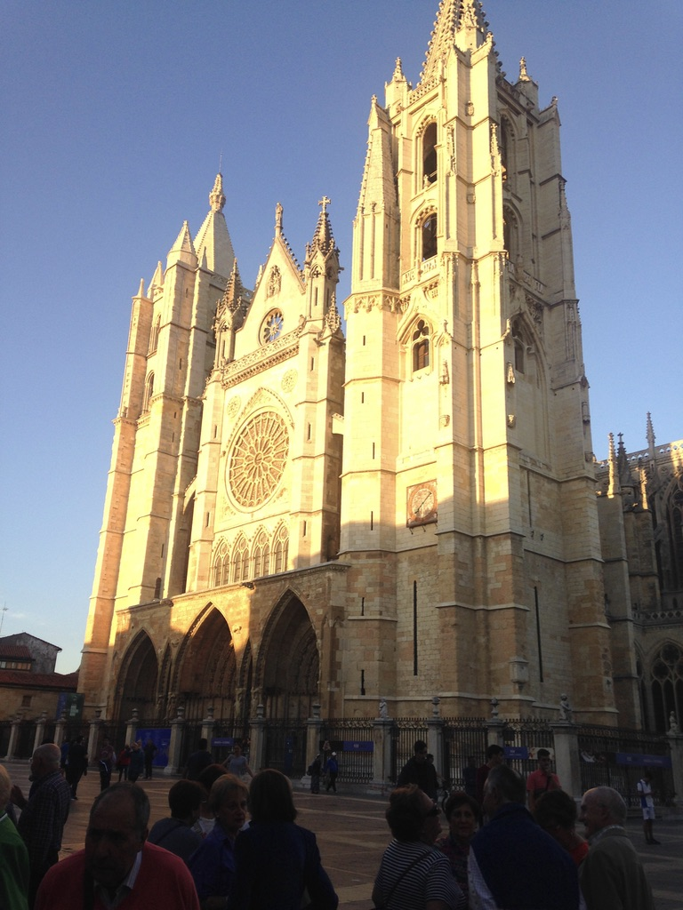

Day 21
4:30am. I inch out from my sleeping bag like a slug, careful not to disturb the others in the room, pack my things and head downstairs. Pauline and Morgan are already awake. We’re late.
My eyes are crusty. I wolf down a prepacked sandwich – chorizo and cheese – with yogurt. Pauline makes us some coffee. Bland, but it will do. Shoes on, rucksacks shouldered, we’re on the move.
The cold pierces through my layers. A creeping wave of goosebumps shivers down my spine. I’m in shorts because I’ve lost my pants. Ridiculous. My feet are sore. It takes thirty minutes of walking before the endorphins kick in.
Pauline is several paces ahead of Morgan and I. We exit town and walk into the twilight, guided by nothing more than the faint glow of a city encapsulated by a narrow crescent of light, a dim lantern flickering in the distance.
Pauline disappears into the darkness. We know she’s ahead, somewhere, but we don’t see her – we can’t. It’s just Morgan and I. We’ve decided not to use our flashlights in order to see the stars. Flickers of movement perturb the corners of my vision. Rock and gravel crunch beneath the soles of our shoes.
We’re walking on a long and narrow road alongside an empty highway. Two cars drive by and shock us with their blinding highbeams. Morgan is close. I wonder if she’s scared of the dark. In the eastern quadrant of the sky, my eyes catch a streak of light. I lean my head back and gaze into the dark ocean, scanning. A shooting star. Another blazes by; I catch it this time. Another, then another. I make a wish.
I try to teach some English to Morgan. States. They’re like how countries are divided in Europe. California, where I’m from, could definitely be 3 countries in Europe. She’s shy to speak, but tries anyways. She’s 22. She has an older brother. She graduated from university two years ago and works as a nurse in France. She’s currently on vacation. She likes dogs.
I tell her I have to stop and pee. She seems confused, but quickly realizes what I had meant as I scurried behind a tree. She continues on. Once I finish, I catch up and we walk in silent admiration of the night.
After 20 minutes or so, she has to pee too. She tells me I can continue, so I do. I then catch up to Pauline. She teaches me some colors in French: noir, blanc, vert, bleu - black white green blue. I parrot them back and she laughs. “It’s cute,” she says. Morgan catches up, and we continue.
Some time in the afternoon.
“TIMOOTHY!!”
I turn around and spot my two favorite Germans, now on bicycles: Franca and Matilde. Matilde tells me her feet aren’t in great of shape, so they’ve bought bikes to compensate. They’re headed to Leon. Morgan, Pauline and I consider following them. It’s an extra 10 kilometers on top of the 27 we’ve already walked. There’s a sharp pain in my hip joint and achilles, but we decide to go for it.
10 kilometers later we’re in Leon. The height of hills and street curbs have become insurmountable. I wince in agony as I drag my legs through the city.
We reach the albergue. 38 kilometers total according to my FitBit, the longest distance I’ve walked yet. No Franca and Matilde though. They must be elsewhere.
In the dining room I see Gael, a Belgian I had met about a week ago in another albergue. I tell him how far I’ve walked today. He grins and replies, “Well, if you’re tired your face doesn’t show it!” Gael has a great attitude. “When I am climbing these hills, I imagine that I am a bird flying over them; what is pain but weakness leaving the body; no matter what decision you make, you make it the best one; just smile and keep walking!”
From his rucksack, he pulls out a large container of potato salad, a foot-long baguette, and a box filled with chocolate pastries. “Have you eaten yet?” Pointing to the food, “Here. Eat. Pilgrims need to eat after a long days walk, especially you. You need to eat so that you can become strong.” I tell him it’s too much to offer, that he’s way too kind. “No, no! You are helping me because there’s no way I can finish all of this. Also, you are helping me keep my pack very light. Please, eat.” I resist no longer, thank him, and feast.
Two days prior, I had found a stray T-shirt in my albergue. It was dark navy-blue with the picture of a bull on its front.
After my meal with Gael, I showered and put the shirt on. I then went to write in a small cafe. While scribbling something down, an older American approached me.
“Hello. That’s a cool shirt. Where did you get it?” he asked.
“I found it a few days ago in my albergue. It was hanging from the corner of a chair. Everyone had already left, so I decided to take it.”
“Well, you might not believe it, but that’s my shirt! It was a gift from my daughter for my birthday. She got it in Madrid.”
“Really? Well, you can totally have it back.”
“Are you sure? You can keep it if you need it.”
“Yeah of course! It’s your shirt. I don’t need it. I’m sure it means a lot to you.”
“Thank you. It’s unbelievable that you’ve found it.”
I ran back to my albergue, threw on a different shirt, and returned to the man. He asked to take a picture of me holding the shirt.
Later, I ran into him again.
“I messaged my family about what just happened, and they just couldn’t believe it.”
